✏️
10月13日物理午训
匀变速直线运动专项 · 共 7 题：第 1—4 题选择/填空提交后即时判分，第 5—7 题计算题先在纸上作答，再点「对答案」自评。
1单选
若某物体做直线运动的 v-t 图像如图所示，则下列说法中正确的是（ ）
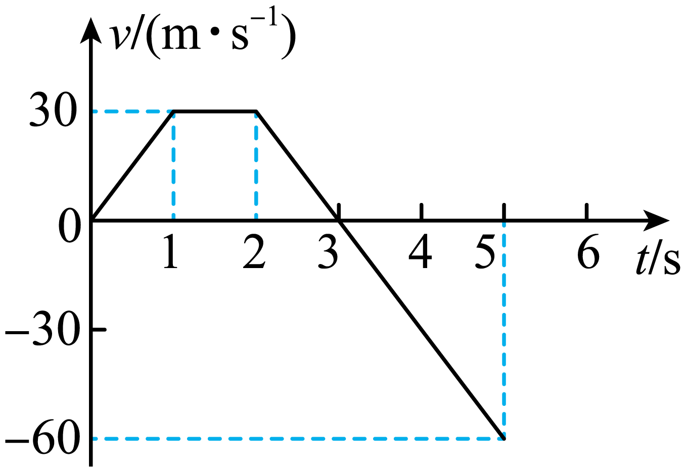
【详解】
A．物体运动的速度可以用正负表示，说明运动过程中有向正向有向负向的阶段，轨迹为直线，故A错误；B．物体在 时的速度虽然为零，但速度的变化率不为零，故B错误；
C． 到 期间速度仍然为正，说明物体仍然向正方向运动，故C错误；
D． 时速度由正变负，方向发生改变，但 至 期间图像斜率不变，加速度大小和方向均不变，故D正确。
故选D。
2单选
某司机驾驶汽车在一城郊道路上缓慢行驶，看到前面路段没有行人和车辆，立即加油门做匀加速直线运动，在一段时间内，汽车速度的平方与位移的关系图像如图所示，下列描述正确的是（ ）
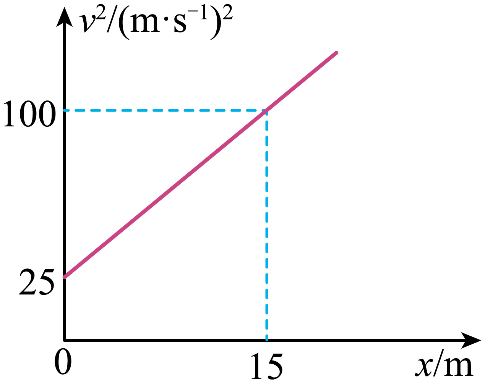
【详解】
AB．根据 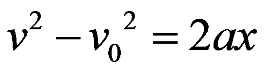
，整理得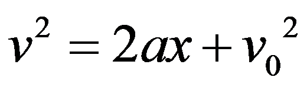
。图像的纵截距为
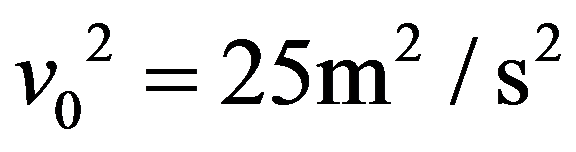
，解得汽车的初速度大小为 ，故AB错误；CD．图像的斜率为
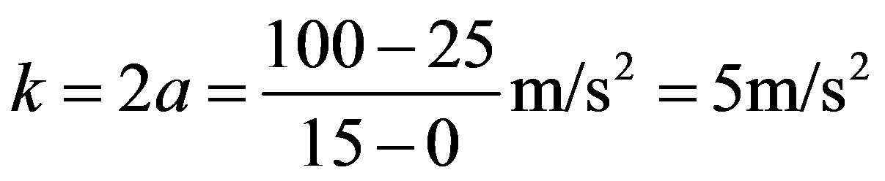
，解得加速度大小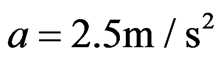
，故C错误，D正确。故选D。
3多选
（多选）物块在粗糙的水平面上，以一定的初速度沿直线运动，它的位移
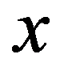
与时间 的关系为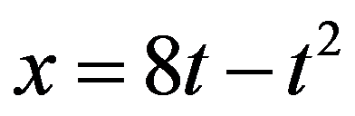
（各物理量均采用国际单位制中的基本单位），重力加速度 取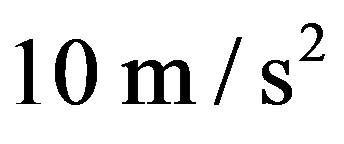
。则下列说法中正确的是（ ）【详解】
将 与匀变速直线运动的位移公式 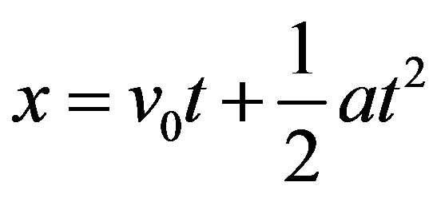
对比可知，物块的初速度 ，加速度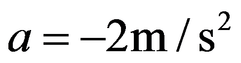
。物块速度减为零所需的时间
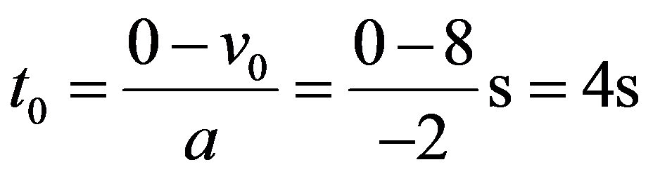
，此时物块的位移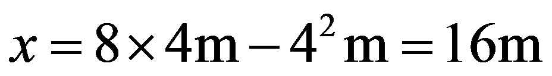
，此后物块不受推力，在摩擦力作用下保持静止。A．第 内物块的位移
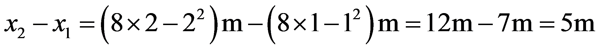
，故A错误；B．前 内物块的位移
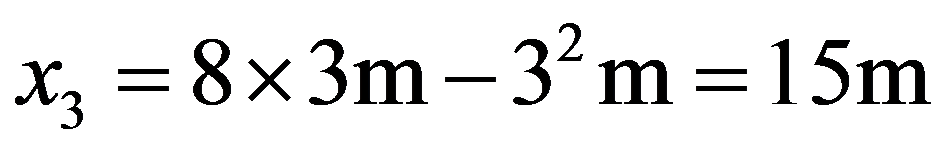
，平均速度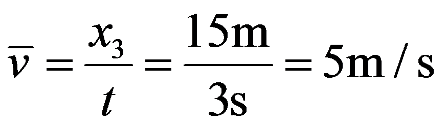
，故B正确；C．物块在 末已经静止，故前 内物块的位移等于前 内的位移 ，故C错误；
D．由 可得 、，故 末物块的速度 ，故D正确。
故选BD。
4实验·多选＋填空
利用如图甲所示装置探究匀变速直线运动。
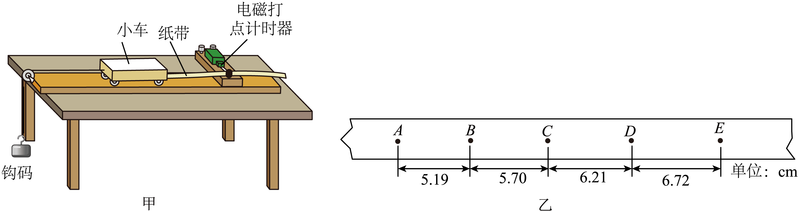
(1) 除图甲中所示器材外，下列装置必要的是_________。（多选）
【详解】
AB．由图甲可知该装置用的是电磁打点计时器，则用的是约 8V 的交流电源，故A错误，B正确；CD．实验中不需要用天平测质量，需要用刻度尺测点迹间的长度，故C错误，D正确。
故选BD。
(2) 图乙为某次实验中得到的一条纸带，两相邻计数点间还有四个点未画出，各点之间的距离已在图乙中标出，实验所用交流电源的频率为 50 Hz，则小车的加速度大小为
（结果保留两位有效数字）
【详解】
相邻两计数点间的时间间隔为 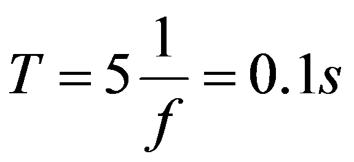
，由逐差法可知，小车的加速度大小为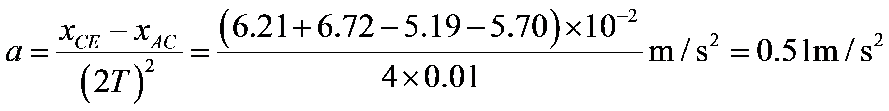
。5计算·自评
冰壶运动是冬奥会的一个项目。如图所示，运动员在 点以一定的初速度将冰壶（可看作质点）沿水平冰面投出，冰壶在冰面上做匀减速直线运动，先后经过 点和 点。冰壶从 点到 点所用的时间 ，从 点到 点所用的时间 ，、 间的距离
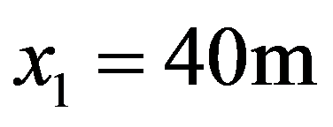
，P、Q 间的距离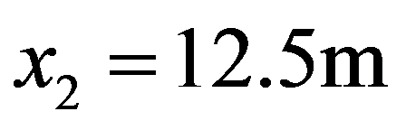
。求：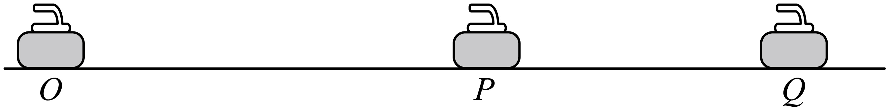
(1) 冰壶从 点到 点的平均速度大小 ；
(2) 冰壶运动过程中加速度的大小 。
(2) 冰壶运动过程中加速度的大小 。
📖 对答案 · 展开参考答案与解析
【参考答案】(1) (2)
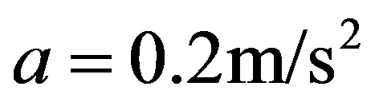
【详解】
（1）冰壶从 点到 点的平均速度大小为 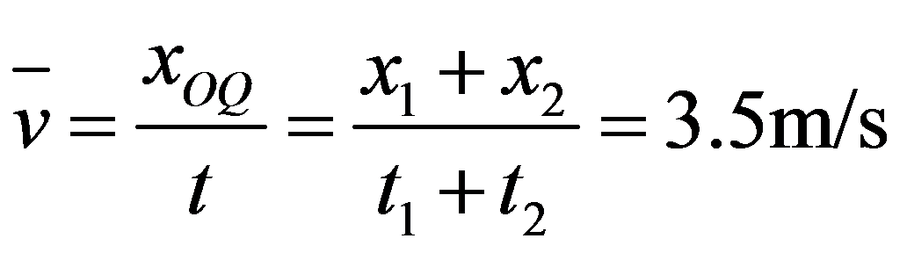
；（2）冰壶从 点到 点的平均速度大小为
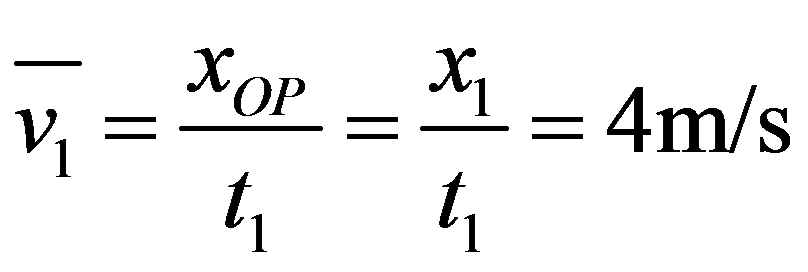
，即为 点到 点中间时间的瞬时速度；冰壶从 点到 点的平均速度大小为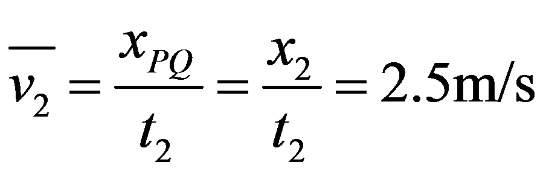
，即为 点到 点中间时间的瞬时速度，则加速度大小为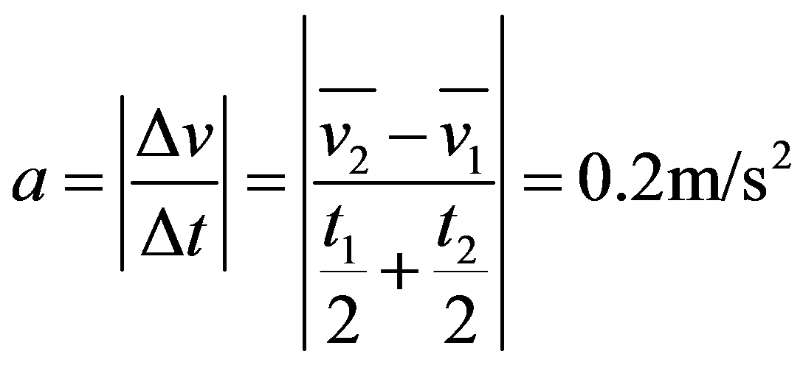
。6计算·自评
为检测某新能源汽车的刹车性能，在平直公路上，某一辆新能源汽车以 20m/s 的速度匀速行驶，某一时刻司机踩下制动器后汽车开始做匀减速直线运动，在 2s 内前进 32m。求：
(1) 开始制动后汽车做匀减速直线运动的加速度大小；
(2) 开始制动后 1s 末汽车的速度大小；
(3) 开始制动后 8s 内汽车行驶的距离。
(1) 开始制动后汽车做匀减速直线运动的加速度大小；
(2) 开始制动后 1s 末汽车的速度大小；
(3) 开始制动后 8s 内汽车行驶的距离。
📖 对答案 · 展开参考答案与解析
【参考答案】(1) (2) (3)
【详解】
（1）取汽车初速度方向为正方向，已知初速度 ， 时位移 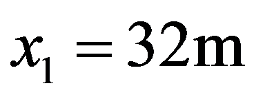
，设匀减速加速度大小为 。匀减速直线运动位移公式为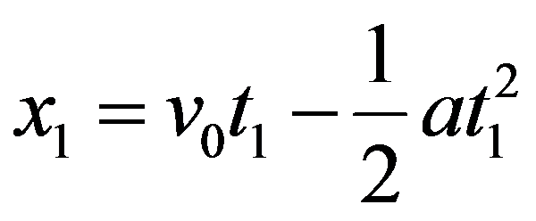
，代入已知数值解得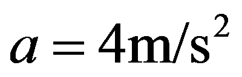
。（2）匀减速直线运动速度公式为 ，代入 得 。
（3）汽车减速到速度为 0 的时间满足 ，解得
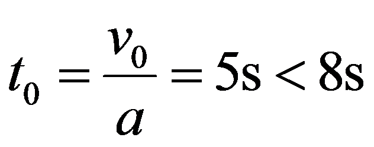
。说明 8s 时汽车已静止，8s 内位移等于刹车总位移。由速度位移关系 得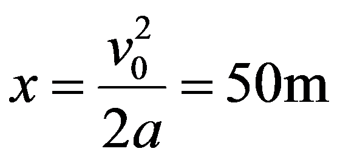
。7计算·自评
当车辆在高速公路发生故障无法移动时，需在车后一定距离放置警示标志。通常，不同司机看到警示标志后会有
(1) 若某次事故中，后车速度取 ，刹车加速度大小取 ，求开始刹车后 内它发生的位移多大？
(2) 假设后方司机经过警示标志时才看到前车，在这种情况下，为避免所有情况下后方车辆与故障车相撞，警示标志应放在故障车尾后面的距离不得小于多少？不考虑后车与警示标志的相撞。
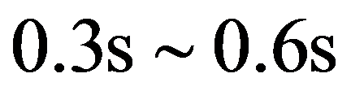
的反应时间。在成渝高速某直线路段限速 （），不同车辆在此公路刹车过程最大加速度大小取值范围为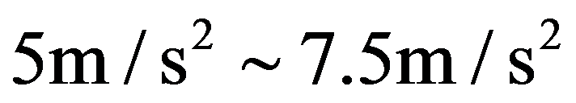
。(1) 若某次事故中，后车速度取 ，刹车加速度大小取 ，求开始刹车后 内它发生的位移多大？
(2) 假设后方司机经过警示标志时才看到前车，在这种情况下，为避免所有情况下后方车辆与故障车相撞，警示标志应放在故障车尾后面的距离不得小于多少？不考虑后车与警示标志的相撞。
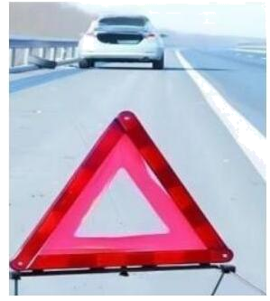
📖 对答案 · 展开参考答案与解析
【参考答案】(1) (2) 警示标志应放在故障车尾后面的距离不得小于 。
【详解】
（1）已知汽车初速度 ，刹车加速度的大小 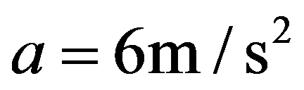
，由匀变速直线运动速度公式可知汽车末速度减小至 0 所需的总时间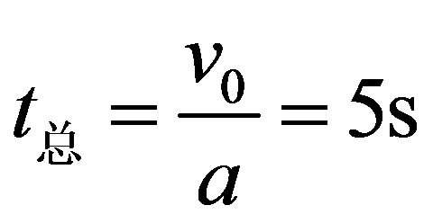
。因此 内汽车的位移就是总刹车位移，满足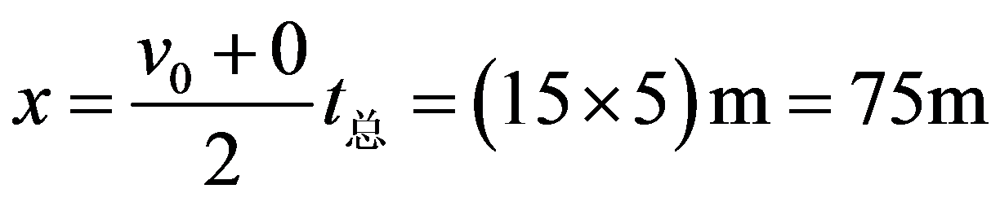
。（2）要保证所有极端情况下都不相撞，需要取最不利的参数组合，即汽车速度取最大 ，反应时间取最长 ，刹车过程最大加速度大小取最小
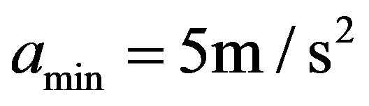
，此时后车的总制动距离（反应距离＋刹车距离）最大，满足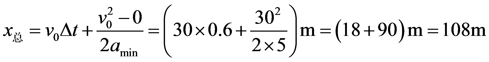
。故为避免所有情况下后方车辆与故障车相撞，警示标志应放在故障车尾后面的距离不得小于 。